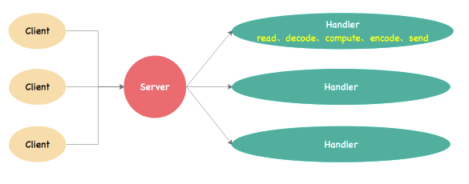
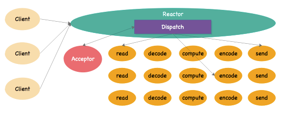
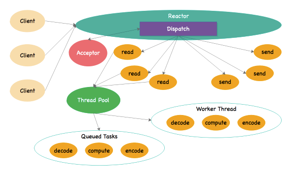
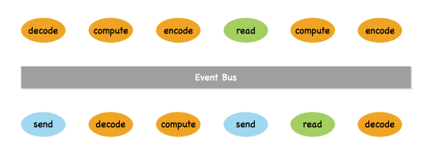

Reactor模式
Reactor模式又称为Reactor设计模式，这个模式是从NIO中出来的，有时候直接翻译过来称为“反应器模式”，这种设计模式是为高并发处理量身打造的设计模式，而且是一种基于事件驱动模型的设计模式。本章我们就来说说它的前世今生。
1.传统模式
本章大部分内容源自于引用的文章，读者也可以直接点击进入去看一些代码层面的东西，本书只介绍这种模式的基础细节。
读者先看看下边的图示【Reference】：

上图中的这种模式是传统的服务设计，每一个请求到来时，服务器会分配一个线程去处理，如果请求暴涨起来，那么意味着需要更多的线程来处理该请求。按照引用文章中的说明，一个请求处理的关注点主要包含以下：
- 请求读取——Read Request；
- 请求解码——Decode Request；
- 服务执行——Process Service；
- 编码响应——Encode / Reply；
- 发送答复——Send Reply；
在真实的环境中，上边五个步骤每个步骤的执行过程效率不一样（开销不对等），而在传统服务设计中，这五个步骤是由同一个线程来执行（上图中的Handler），那么当并发数量比较高的时候，系统创建的线程数会线性递增。关键的问题是：资源浪费，这一点从何说起？比如一个线程在“服务执行”这个步骤，由于这个线程和“请求读取”是同一个线程，服务执行如果需要耗费很长时间，那么此时的线程是只能“等待”，什么事都不能做，这无疑是对系统资源的一种占用。
在这种传统请求模型中，五个步骤的线程处理是一比一的，它的核心性能瓶颈在于线程池，线程池本身创建和销毁线程时候就存在一定的开销，再者线程池这种结构本来对于高并发的增长就不是一个良好的解决方案，若请求出现海量增长，线程池的工作线程数量一旦满载，那么剩余的请求全部会出现“等待”或者索性被“抛弃”。而根据上边的请求处理步骤，实际上这个请求处理完整过程是可以被拆分的，可以切割成一些小任务——若每个小任务都可以使用非阻塞的模式，然后基于异步回调模式，那么这种情况下，1:1的局面就被打破了，系统吞吐量会大大提高。
2. Reactor模式
有没有一种方式，可以让系统线程专注于某一块的任务，而实现软件设计中的"单一职责“的原则？最初的Reactor模式又称为单线程的Reactor，在这种模式下，服务端引入了一个新角色：Acceptor，它会不断去监听是否有客户端请求进来，一旦收到新的请求，它就会将这个请求发送给分发器，让它将请求分发修去执行。

这种模式下是最早的Reactor，中间还没有引入事件总线的概念，只是加入了一些机制上的改动：
- 将传统的请求处理步骤细化，不同的步骤由不同的线程来处理；
- 添加了两个新角色：Acceptor和Reactor；
- Acceptor负责接收请求以及等待新的请求，一旦有请求过来，则直接将请求发送给Reactor；
- Reactor内部有一个新操作Dispatch，它专程负责请求的分发处理；
从上边的图上可以知道，Dispatch和Vert.x中的Event Loop线程做的事情挺像的，实际上这个时候已经完成了事件循环的监听动作，并且完成了请求分发，分发过程会将请求丢给不同的线程去处理。在这种模式下，有一个小问题在于每个任务线程并没有区分阻塞/非阻塞的任务，虽然进行了基于职责的线程拆分，当客户端请求挂起在某个线程中时，还是需要客户端等待最终的执行结果，这种模式的异步化还没有实现事件驱动模型的全貌。
3. 工作线程池
随着Reactor模式的演进，任务线程池又进行了细分设计，为了复用工作线程（在上图中处理decode、compute、encode的专用线程），引入了工作线程池的概念，类似Vert.x中的Worker Pool。

这种模型就是现在成熟的Reactor模式，实际上对于上图中，按照Vert.x的内容来解读的话，Reactor部分接收请求，就是Standard类型的Verticle组件干的事，而其他任务就是Event Bus事件总线之后Worker类型的Verticle组件干的事。工作线程池的引入彻底分离了阻塞/非阻塞的任务，由于工作线程一直是异步执行，所以真正在运行过程中，这种系统的吞吐量是完全可胜任高并发的，而这种模型就是我们通常讲的事件驱动模型。
虽然图中看不到Event Bus的影子，但是读者可以开出自己的脑洞，用Verticle组件化的思维有下边的这种结构：

假设read工作和send工作由Standard类型的Verticle来完成，其他三种encode, compute, decode的工作由Worker类型的Verticle组件来完成，而这些线程各自独立，它们通信的基础就是Event Bus，而不是调用；也就是说当一个read操作完成后，它会将数据以消息【也就是事件驱动模型中的Event事件】的方式直接发送到Event Bus中，然后Worker类型的Verticle组件会直接消费该事件或者消息，然后执行，这种通信不限于Worker和Standard的通信，包括Worker和Worker，Standard和Standard都可以统一使用这种模式通信。
4. 总结
那么到最后，谈谈Reactor模式带来的优缺点，让读者对这种设计模式有更加清晰的认识：
优点
- 响应速度快，由于分离了
read和后续操作，所以客户端不需要为单个同步操作被阻塞——但Reactor本身依旧是同步的； - 编程更简单，开发人员不用去考虑复杂的多线程、数据同步问题，并且也避免掉线程切换的开销；
- 扩展性强，上图中只是提到了
read, decode, encode, compute, reply五种最基本的操作，在真实场景中，这些事件类型可让开发人员自己扩展，比如验证、过滤、转换等，而在扩展过程只需要遵循Event Bus中的消息规范，切换掉消息地址，就可以直接将新组建编连到系统中了； - 由于该模式本身与事件处理的逻辑无关，所以之中的每一个节点都是可复用的，只要你的粒度设计得适当。
缺点
- 由于粒度更加细致，将传统一个线程的事情交给了多个线程来完成，复杂度有了提高；
- 由于启用了纯异步的编程模型，增加了调试的复杂度，单纯依靠断点的方式调试可能不一定凑效（对于一些异步调试，作者推荐使用数据流监控分析的调试方法来实现）。
- 由于Reactor的设计模型还依赖于底层的同步事件多路分离器（Synchronous Event Demultiplexer）来实现，这一部分是操作系统、容器、或框架应该自带的，Vert.x就是Netty本身作为纯异步Java服务器带了该底层组件，若您的条件不满足自己去实现，将会遇到很大的难题。
归根到底，这种模式在解决高并发请求服务的过程中具有很明显的性能优势，这也是为什么我推荐使用Vert.x，而不是Spring的主要原因，这是一种理论和编程思维的革新，而不单单是旧瓶装新酒的操作。换句话来说，实际上Spring中也可以自己引入第三方的事件驱动模型来实现这种非阻塞、异步化的请求流程操作，有兴趣的读者可以自己去钻研。